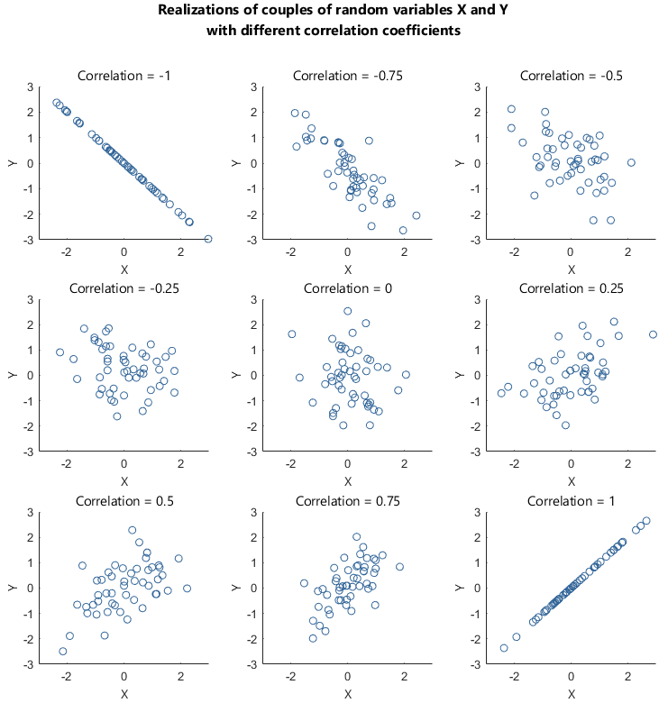

`geom_smooth()` using formula = 'y ~ x'
`geom_smooth()` using formula = 'y ~ x'
`geom_smooth()` using formula = 'y ~ x'
`geom_smooth()` using formula = 'y ~ x'
`geom_smooth()` using formula = 'y ~ x'
`geom_smooth()` using formula = 'y ~ x'
`geom_smooth()` using formula = 'y ~ x'
`geom_smooth()` using formula = 'y ~ x'
`geom_smooth()` using formula = 'y ~ x'DATA 202 - Week 10
Notes on causal theories
Nathan Alexander, PhD
Center for Applied Data Science and Analytics
Part I: Context

Illustration by Yuko Shimizu from cigionline.org.
Last week launched part 3 of our course: data and policy, as in public policies.
Our goals this week will be to consider variations of justice for your particular area(s) of interest and study, and to cite references that allow us to understand the meaning of social justice in your specific intellectual domains.
History, cause, and effect
Theory is often understood through an investigation of both the literature and the historical contexts surrounding a given issue. Take, for example, the legacies of colonization. As data and scientific developments expand into new fields, new questions arise as to what we can associate and how we understand these associations. For example, how does one theoretically relate a series of events from 150 years ago to a present set of conditions? What are the possibilities? What are the limitations? What are the cautionary tales?
Statistics was situated as a vehicle to understand and measure observations. As it becomes an ever popular vehicle to inform social justice discourses, the many real-world associations identified in society bring to mind the well-known and readily available cautionary tale:
Correlation does not imply causation.
This popular statement relates to the ability (or inability) to deduce cause-and-effect relationships.
Causation
Note
Causality is a fundamental concept in scientific inquiry and statistical analysis. It refers to the relationship between cause and effect, where one event (the cause) is understood to be responsible for another event (the effect). In statistics, causal inference aims to identify and quantify these cause-effect relationships.
Causality can be defined as a relationship between two events where:
The cause precedes the effect in time.
There is a consistent association between the cause and effect.
Alternative explanations for the association have been ruled out.
Correlation
In the traditional setting, correlation is framed as a statistical measure that relays the size and direction of the relationship between two or more variables. From a more critical framework, however, the idea of associations between variables and the attribution of relationships between variables must be both examined and interrogated.
Associations should be understood and initiated from the root of a theoretical framework.
If two variables are related, in a statistical context, we assume that their values change in some ordered fashion. These measures are often represented on an axis depicting the strength of the association.
Image from statlect.com
As one value of a first variable increases the other variable’s values may also increase (positive relationship). Alternatively, as the value of one variable increases the other variable’s values may decrease (negative relationship). Key questions to consider focus on how context and other factors shape any seeming bivariate relationship.
Spurious correlation
At the intersection of mathematics and statistics is the concept of the spurious correlation (Ward, 2013). A few examples:
Divorce rate has been found to correlate with margarine use.
Ice cream sales have been correlated with:
Swimming deaths
Shark attacks
Crime rates
The use of the popular site Facebook has been correlated with diminished well-being.
These association help us see the need to investigate relationships further. What are possible unexplained relationships in these associations? We identify potential spurious variables when developing theoretical ideas about associations.
Causation
Causality (See Sloman and Acnado (2015)) is a representation and principle of cause and effect. There are many different viewpoints of causation across disciplines and fields of study. Terminology matters in how one frames cause and effect.
There are four possible relationships between two variables:
X causes Y
Y causes X
X and Y are both caused by Z
X is not related to Y
While these relationships may exist in some combination, it is important to frame their differences.
Associating X and Y
Our initial framing might directly link the variables X and Y.
First, we have the association X causes Y.
graph LR A[X] --> B[Y]
Next, we have the association Y causes X.
graph LR A[Y] --> B[X]
Finally, we have the association X causes Y and Y causes X.
graph LR A[X] <--> B[Y] B --> A
Framing spurious relationships
However, after further reading, we may find that we need to integrate a third factor Z.
In this context, a third factor (the “third-cause fallacy”) represents a spurious relationship.
graph LR A[X] B[Y] C[Z]
Spurious relationships denote an observed or hypothesized association.
There are important differences in how we depict and deal with third factor associations.
Confounding variables
Confounding is a causal concept that focuses on spurious or distorted associations.
Below, Z is considered a confounding variable.
graph TD A[Z] --> B[X] A --> C[Y]
Z is related to both the independent, \(X\), and dependent, \(Y\), variables in the causal sense.
Your analysis should examine if the relationship between \(X\) and \(Y\) holds.
These interactions are described as spurious associations.
Mediating variables
A mediating variable explains the process by which two variables are related.
graph LR A[X] --> B[Z] B --> C[Y]
- Z provides the mechanism to relate the independent, \(X\), and dependent, \(Y\), variables.
Moderating variables
A moderating variable explains the strength by which two variables are related.
graph LR A[X] --> B[Z] A --> C[Y] B --> C
- Z explains the strength of association between the independent, \(X\), and dependent, \(Y\), variables.
Let us look at a concrete example.
Part II: Content
The methods used to collect sample data is extremely important.
If sample data are not collected in an appropriately, any resulting statistical analyses will be futile. As a result, planning a study by identifying research questions, the population and sample of interest, and considering the types of methods that will be used to analyze data that is collected are all essential parts in the statistical data analysis process.
More on sampling methods
First, let’s revisit and describe the different sampling methods:
There are two broad categories of selecting members of a population to generate sample data: probability sampling and non-probability sampling.
Within these two broad categories are other methods based on the needs of the study. Each of these methods is used to support statistical data analysis with some methods providing stronger evidence than others.
- Probability sampling
-
involves the random selection of subjects in such a way that every member of a sample has the sample probability of being selected.
- Non-probability sampling
-
involves the use of criteria to select data that is not based on an equal likelihood of selection.
Probability sampling methods
Simple random sample of \(n\) subjects ensures that every possible sample of the same size \(n\) has the same chance or likelihood of being chosen.
Systematic sample of \(n\) subjects involves selecting every \(k\)th subject on some regular interval.
Stratified sample involves dividing the population up into strata (groups) with the same characteristics and then randomly sampling within those strata.
Cluster sample involves partitioning the population into clusters (groups), randomly selecting some clusters, and then selecting all members of the selected clusters.
Non-prbability sampling methods
Convenience sample is data gathered from the most accessible or convenient source. Although this is easy and efficient, the data cannot produce generalizable results.
Purposive sample is data gathered based on the purposes of the research or the specific research question. This strategy includes clear criteria and rationale for inclusion.
Snowball sample is data gathered via recruitment by the other participants of a study. The number of subjects included “snowballs” as more contacts are generated.
Multistage sampling
In larger studies, sometimes multistage sampling procedures are used to generate data. In this design, different samples are selected in different stages, and each stage might use a different sampling method. The end result may represent a complicated sampling design but it is often simpler and faster than some designs, such as a simple random sample.
Missing Data
Data can be missing from a set, and the total number of elements can differ between two or more sets.
The differences in the number of elements can be due to a host of reasons, but often it is missing data. A data value can be missing at random or not missing at random. The amount of information missing from a data set can have a minimal impact or a major impact on a statistical analysis.
Note
Note – Missing data
A data value is missing completely at random if the likelihood of it being missing is independent of its value or any other values in the data set is just as likely to be missing.
A data value is not missing at random if the missing value is related to the reason it is missing.
Part III: Code
Crime statistics
Data from 1973 on violent crime rates by US State in the USArrests data set.
Values are per 100,000 residents for assault, murder, and rape.
Murder Assault UrbanPop Rape
Alabama 13.2 236 58 21.2
Alaska 10.0 263 48 44.5
Arizona 8.1 294 80 31.0
Arkansas 8.8 190 50 19.5
California 9.0 276 91 40.6
Colorado 7.9 204 78 38.7 Murder Assault UrbanPop Rape
Vermont 2.2 48 32 11.2
Virginia 8.5 156 63 20.7
Washington 4.0 145 73 26.2
West Virginia 5.7 81 39 9.3
Wisconsin 2.6 53 66 10.8
Wyoming 6.8 161 60 15.6[1] 0.06957262What are some initial takeaways from this plot?
Without a guiding theory, where might our analyses take us?
Education data
This data is borrowed from the folks at UCLA’s Statistical Methods and Data Analytics office.
id gender math daysabs prog
1 1001 male 63 4 2
2 1002 male 27 4 2
3 1003 female 20 2 2
4 1004 female 16 3 2
5 1005 female 2 3 2
6 1006 female 71 13 2 id gender math daysabs prog
309 2152 female 46 1 3
310 2153 male 26 1 2
311 2154 female 79 3 3
312 2155 female 59 0 2
313 2156 female 90 0 3
314 2157 female 77 2 3educ <- within(educ, {
prog <- factor(prog, levels = 1:3, labels = c("General", "Academic", "Vocational"))
id <- factor(id)
})
summary(educ) id gender math daysabs prog
1001 : 1 female:160 Min. : 1.00 Min. : 0.000 General : 40
1002 : 1 male :154 1st Qu.:28.00 1st Qu.: 1.000 Academic :167
1003 : 1 Median :48.00 Median : 4.000 Vocational:107
1004 : 1 Mean :48.27 Mean : 5.955
1005 : 1 3rd Qu.:70.00 3rd Qu.: 8.000
1006 : 1 Max. :99.00 Max. :35.000
(Other):308 What are some initial takeaways from this plot?
Without a guiding theory, where might our analyses take us?